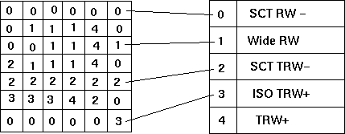
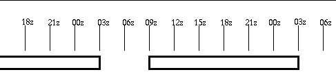
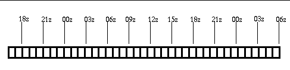

Organization of the Gridded
Data in the netCDF file
netCDF Variable Names
For weather elements of type SCALAR, all of the data are stored in this simple cube form. For VECTOR weather elements, two cubes are used, one for the magnitude, one for direction and they are coordinated so that the first magnitude grid corresponds to the first direction grid, and so on. For WEATHER, one cube is used to store byte values that map into another structure that holds strings that represent the weather values. The following illustration shows how this WEATHER grid and WEATHER KEY should be used to extract a weather value.

The grid on the left illustrates the values of the byte values for the weather grid. The list on the left shows the actual weather values expressed as a text string. In order to determine what the weather value is at any given point, you will need both the weather byte grid and the "weather key". Simply read the byte value in the grid and lookup that value in the key list.
| Format | Example | Data Type | Dimensions | Description |
| parmName_level | Sky_SFC | Scalar Grid Data | (#grids, ysize, xsize) | Variable that contains scalar grids as floats, shorts, or bytes. Attributes are associated with this variable. |
| parmName_level_GridHistory | Sky_SFC_GridHistory | Grid Data History for scalar, vector, and weather | (# grids, string size) | Variable that contains the coded grid data history for the grid. The associated grid is specified in the first dimension. The data format is characters. More detail on the formatting of the history string is shown here . |
| parmName_Mag_level | Wind_Mag_SFC | Vector Grid Data, magnitude component | (#grids, ysize, xsize) | Variable that contains the magnitude component of the gridded data as floats, shorts, or bytes. Attributes are associated with this variable. |
| parmName_Dir_level | Wind_Dir_SFC | Vector Grid Data, direction component | (#grids, ysize, xsize) | Variable that contains the direction component of the gridded data as floats, shorts, or bytes. Attributes are associated with this variable. The direction is the "from" direction of the wind and is in degrees from true north. |
| parmName_level | Wx_SFC | Weather Grid Data | (#grids, ysize, xsize) | Variable that contains the weather grid as bytes. Attributes are associated with this variable. You need the weather keys to determine the meaning of each number in the grid. |
| parmName_SFC_wxKeys | Wx_SFC_wxKeys | Weather Key Data | (#grids, #keys, #size of each key) | Variable that contains the weather key mapping for each Wx grid. The #keys refers to the key mapping index in the grid data. |
| Attribute Name | Attribute Description |
| validTimes | A list of start and end times for which the grids are valid. These are ordered start1, end1, start2, end2, etc. The time is in seconds from Jan 1, 1970 at 0000z. |
| descriptiveName | The descriptive name of the weather element. |
| gridsize | The number of grid cells in each grid for this weather element (x, y) |
| domainOrigin | The lower left corner of the grid domain in AWIPS coordinates |
| domainExtent | The extent of the domain in AWIPS coordinates |
| minMaxAllowedValues | The minimum and maximum values allowed, respectively for this weather element |
| gridType | The type of grid. The types are: SCALAR, VECTOR, WEATHER |
| databaseID | Database identifier from which the grids were extracted. |
| siteID | The site ID of the database from which the grids were extracted. |
| units | The units of the values for these grids. |
| level | The level of the data. For forecast data this is always "SFC" |
| timeConstraints | Three integers that represent the time constraints for the data. See GFE documentation for more details. |
| precision | Data precision for the gridded data. |
| projection info (12 items) | All the infomation needed to reconstruct the projection on which this grid is defined. |
| fillValue | Data fill value which indicates that portions of the grid is not valid. |
| dataMultiplier | Data multiplier for the values contained in the grid. If not specified, defaults to 1. |
| dataOffset | Data offset for the values contained in the grid. If not specified, defaults to 0. |

Most parameters are defined in the database with a one hour constraint (start time = 0000z, repeat = 1 hour, duration = 1h). Therefore the highest temporal resolution of the grids is one hour:

A special case exists which defines no constraints. This is the situation with a start time, repeat, and duration values all set to 0. The temporal resolution of the grids can be one second.
data value = (netCDF value * dataMultiplier) + dataOffset
| Attribute | Used By | Description |
| latLonLL | all projections | specifies the latitude and longitude in degrees of the lower-left grid point in the projection. Note that it is defined as x=longitude, y=latitude so that the entry is (lon, lat). |
| latLonUR | all projections | specifies the latitude and longitude in degrees of the lower-left grid point in the projection. Note that it is defined as x=longitude, y=latitude so that the entry is (lon, lat). |
| gridPointLL | all projections | specifies the grid numbering system and the grid point number for the lower-left point in the projection. This is usually (1, 1) |
| gridPointUR | all projections | specifies the grid numbering system and the grid point number for the upper-right most point in the projection. This is specified as (x,y). The projection grid size is gridPointUR-gridPointLL+1. |
| projectionType | all projections | Projection types can be LAMBERT_CONFORMAL, POLAR_STEREOGRAPHIC, LATLON, or MERCATOR. |
| latLonOrigin | LAMBERT_CONFORMAL only | Specified as (lon,lat). The longitude is the location where the projection has north as straight up. The latitude is typically the latitude intersect of the projection and earth which is the standard parallel. |
| stdParallelOne | LAMBERT_CONFORMAL only | Latitude intersect of projection and earth -- lower latitude. |
| stdParallelTwo | LAMBERT_CONFORMAL only | Latitude intersect of projection and earth -- upper latitude. |
| lonOrigin | POLAR_STEREOGRAPHIC only | Center longitude for the polar stereographic projection, where the projection has north as straight up. |
| lonCenter | MERCATOR only | Center longitude for the mercator projection, where the mercator projection is parallel to the Earth's surface. |
| Token Number | Token | Description | Example |
| 1 | Grid Origin | Number describing the origin of the grid. 0=populated from a model, 1=time interpolated, 2=created from scratch, 3=calculated, 4= other. | 0 |
| 2 | Original Weather Element Identifier | String defining the original weather element identifier (ParmID) for this grid. This string is colon (:) and underscore (_) separated and always consists of several segments in this format: parmName_level:siteID_GRID_optionalType_modelName_modelDate_modelTime | T_SFC:BOU_GRID_D2D_NAM_20020209_1200 |
| 3 | Original Grid Starting Time | Original starting valid time of the grid in seconds since January 1, 1970 at 0000z.. | 1013472000 |
| 4 | Original Grid Ending Time | Original ending valid time of the grid in seconds since January 1, 1970 at 0000z. | 1913475600 |
| 5 | Modification Time | Time when the grid was last modified by an edit operation, in seconds since January 1, 1970 at 0000z. If the grid has not been modified, this value is 0. | 1913475900 |
| 6 | Modification User | User that last modified the grid (WsId). If the grid has not been modified (token #5 is zero), then token #6 is not present in the string, i.e., it is skipped. The format of this entry is: networkAddress:username:processName:pid:optLock. This describes the IP address where the grid was modified, the user account, the name of the process, the process identifier (PID), and an optional lock value. | 2688174985:mark:gfe:19467:0 |
| 7 | Update Time | Time when the grid was saved to GFE (for local grids), or time when the grid was created for Intersite Coordination Grids (ISC database). In seconds since January 1, 1970 at 0000z. Note that grids from the published (Official) database reflect the time the grid was first stored in the database, and not when it was published. | 1012791326 |
| 8 | Publish Time | Time when the grid was published to the Official database in seconds since January 1, 1970 at 0000z. If this grid was not published, then this value will be 0. | 0 |
| Attribute Name | Attribute Description |
| creationTime | An integer which represents the number of seconds since January 1, 1970 at 0000z when this file was created. |
| creationTimeString | A human-readable version of the creationTime |
| fileFormatVersion | A string, in the form of yyyymmdd, which represents the file format version. |
| startProcTime | The value of the -s switch when this file is created, in the form of yyyymmdd. This and the endProcTime cover the total valid time of the netCDF file. If the assumption is made that the netCDF file contains all grids over a particular time period, then the startProcTime and endProcTime cover that period. This is used to determine what times do NOT have grids available. |
| endProcTime | The value of the -e switch when this file is created, in the form of yyyymmdd. This and the endProcTime cover the total valid time of the netCDF file. If the assumption is made that the netCDF file contains all grids over a particular time period, then the startProcTime and endProcTime cover that period. This is used to determine what times do NOT have grids available. |